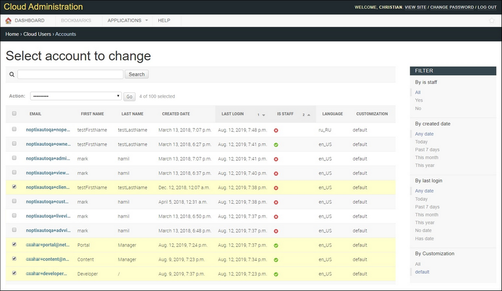
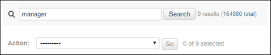
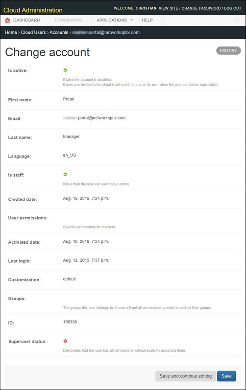

Accounts |
  
|
Accounts |
|
Use the Accounts page to view and export the list of registered users.

This list can be sorted by clicking on any column header except email, first name or last name. You can use the filter table to the right of the list to filter the user list by subscribe status, staff status, date created or last login date. There is also a search tool that applies to all fields in the lists.
•The count next to the Search field shows the number of users currently listed, and in parentheses, the total number of users.
•The count next to the Action field shows the number of users selected from the number of users currently listed.

To download the user list
1.Optionally, filter the user list.
2.Optionally, select specific users by checking the checkbox next to their email. You can also use the checkbox in the header row to select either all users currently displayed onscreen, or all users in the filtered list.
3.In the Action field, select Export selected objects as csv file.
4.Click Go to download a .csv with the generic name api_account (x).csv, where x is a number that increments automatically.
IMPORTANT! It is up to Cloud Portal administration to adhere to the privacy policies of their company when using user data.
To view information for a specific user
Click on a user email to open a Change account page that displays the database values for that user. Attributes shown are:
•First name – the user's first name.
•Last name – the user's last name.
•Email – the user's email address.
•Is active – displays a green check () if user is active or a red X () if user is inactive. Creating an account does not make a user active. To make an account active, a user must reply to an account verification email. Active status can only be changed by a user with special permissions or by contacting Network Optix support.
•User Permissions – displays specific permissions granted to this user.
•Activation date – date and time the user's reply to their account verification email was received.
•Subscribe – displays a green check () if user is subscribed to receive Cloud Portal emails or a red X () if not. This setting can be changed by the user or by administrators.
•Is staff – displays a green check () if user is a company employee or a red X () if not. Staff users have special permissions (ex. Content Manager or Portal Manager) that are assigned by Network Optix.
•Last login – shows the date and time the user last logged in to the Cloud Portal.
•Customization – the version of the Cloud Portal the user is able to view.
•Created date – date and time the user account was created on the Cloud Portal.
•Groups – shows all groups the user belongs to.
•ID – account ID.
•Superuser Status – displays a green check () if user is a superuser or a red X () if user is not a superuser.
